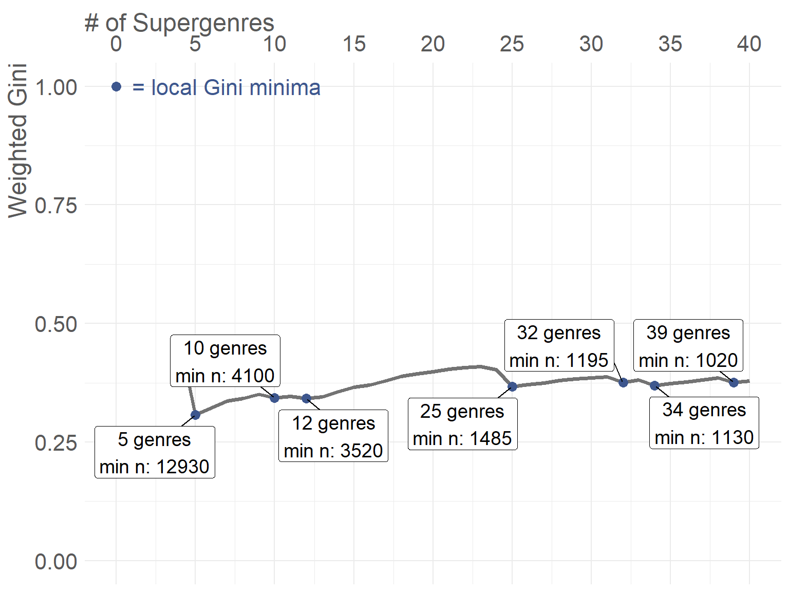
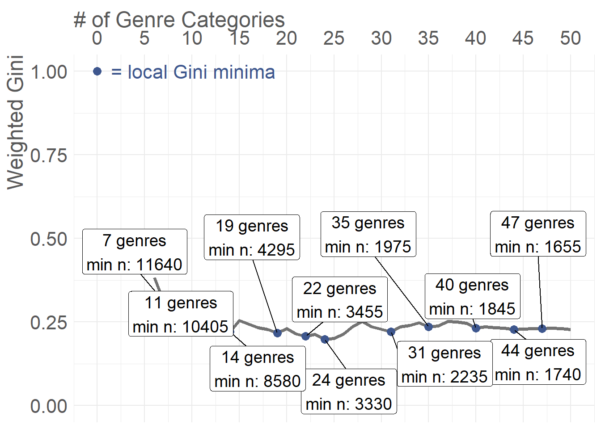

%%{init: {
'flowchart': {
'nodeSpacing': 50,
'rankSpacing': 80,
'useMaxWidth': true,
'htmlLabels': false,
'curve': 'basis'
},
'theme': 'base',
'themeVariables': {
'fontSize': '22px',
'fontFamily': 'Arial, sans-serif',
'primaryColor': '#ffffff',
'primaryTextColor': '#333333',
'primaryBorderColor': '#cccccc',
'lineColor': '#666666',
'textColor': '#333333'
}
}}%%
flowchart TD
A["Start with initial music genres and hierarchy tree"] --> B["Try different minimum song counts (grid search)"]
B --> C["For each minimum count: Start folding process"]
C --> D["Find leaf genre with most songs at deepest level"]
D --> E{"Does this genre have enough songs?"}
E -->|Yes| F{"Is the parent genre the root of the tree?"}
E -->|No| G["Merge genre with parent and all siblings and all grandchildren of parent that were already metagenres"]
F -->|No| FF{"Would parent + siblings have enough songs combined?"}
FF --> |Yes| H["Pluck genre from tree (cut connection to parent)"]
FF -->|No| G
F -->|Yes| H
G --> I["Update song counts and mark genres as processed"]
H --> I
I --> J{"Are we at the root level?"}
J -->|No| D
J -->|Yes| K["Calculate diversity score (Gini coefficient)"]
K --> L{"Can we calculate a valid diversity score?"}
L -->|Yes| M["Save this solution and try next minimum count"]
L -->|No| N["Stop search - no more valid solutions"]
M --> O{"More minimum counts to try?"}
O -->|Yes| C
O -->|No| P["Remove duplicate solutions and return best options"]
N --> P
P --> Q["End: Return optimized genre groupings"]
Metagenres - Genre Discourse Analysis
1 Algorithm for folding the genre tree to get metagenres
For answering research questions that involve genre comparision, often times the available genre labels are too specific and sparse to allow for meaningful analysis. To counter this, we can group genres into broader “metagenres” by folding our genre hierarchy tree. From a pragmatic perspective, we want to ensure that: 1. Each metagenre has a minimum number of songs associated with it to allow for statistical analysis. The only exception to this is the root of the tree, “POPULAR MUSIC”, which serves as a catch-all for songs that do not fit into any other metagenre. 2. Also, for machine learning applications, having a balanced distribution of songs across metagenres is beneficial. Therefore, we look for a tree of metagenres that maximizes the uniformity of song distribution across metagenres at each hierarchy level.
To achieve this, we implement a greedy algorithm that iteratively merges the least populous genres that are furthest from the root with their parent genres until all genres meet the minimum song count requirement. We evaluate different minimum song counts using a grid search approach to find the optimal configuration that maximizes distribution uniformity within hierarchy levels, measured by the weighted within-level Gini coefficient. Please refer to the flowchart below for a detailed overview of the algorithm.
Note
We need to ensure that when merging a genre with its parent, we also merge all siblings and all grandchildren of the parent genre into the parent genre to avoid dangling nodes in the tree. Due to how the trees are created, merging grand children that already fulfilled the min n requirement will not occur often: Genres that are closer to the root are expected to generally appear more frequent in initial genres than genres further away from the root.
2 Tuning results
Show/Hide Code
mb <- read_feather_with_lists("../data/filtered_mb_long.feather")
mb_tuning <- readRDS("../models/metagenres/tune_mb_metagenres.rds")
mb_tuning_metadata <- readRDS("../models/metagenres/tune_mb_metadata.rds")
mb_gini_plot <- readRDS("../models/metagenres/tune_mb_gini_plot.rds")
mb_suggested_solution <- readRDS("../models/metagenres/metagenres_mb_suggested_solution.rds")
s <- read_feather_with_lists("../data/filtered_s_long.feather")
s_tuning <- readRDS("../models/metagenres/tune_s_metagenres.rds")
s_tuning_metadata <- readRDS("../models/metagenres/tune_s_metadata.rds")
s_gini_plot <- readRDS("../models/metagenres/tune_s_gini_plot.rds")
s_suggested_solution <- readRDS("../models/metagenres/metagenres_s_suggested_solution.rds")Show/Hide Code
# Helper function to get all unique solutions in range 1-50 metagenres
get_solutions_in_range <- function(tuning, suggested_solution, min_genres = 1, max_genres = 50) {
# Get number of metagenres in suggested solution
suggested_n_metagenres <- nrow(suggested_solution$n_songs)
# Get solutions with unique n_metagenres in the specified range
# Use the last occurrence of each n_metagenres (highest min_n)
solutions_df <- tuning$ginis |>
dplyr::filter(n_metagenres >= min_genres, n_metagenres <= max_genres) |>
dplyr::arrange(n_metagenres, dplyr::desc(min_n)) |>
dplyr::distinct(n_metagenres, .keep_all = TRUE) |>
dplyr::arrange(dplyr::desc(n_metagenres)) |>
dplyr::mutate(
solution_id = as.character(min_n),
label = sprintf("%d metagenres (min_n: %s, Gini: %.3f)",
n_metagenres,
format(min_n, big.mark = ","),
weighted_gini),
is_suggested = n_metagenres == suggested_n_metagenres
)
# Map to actual solutions and filter out incomplete ones
solutions_list <- list()
valid_indices <- c()
for (i in seq_len(nrow(solutions_df))) {
id <- solutions_df$solution_id[i]
solution <- tuning$solutions[[id]]
# Check if solution is complete (has required components)
if (!is.null(solution) &&
!is.null(solution$mapping) &&
!is.null(solution$metagenre_graph) &&
nrow(solution$mapping) > 0) {
n_meta <- as.character(solutions_df$n_metagenres[i])
solutions_list[[n_meta]] <- solution
valid_indices <- c(valid_indices, i)
}
}
# Filter metadata to only valid solutions
solutions_df <- solutions_df[valid_indices, ]
list(
solutions = solutions_list,
metadata = solutions_df,
suggested_n_metagenres = suggested_n_metagenres
)
}
mb_all_solutions <- get_solutions_in_range(mb_tuning, mb_suggested_solution)
s_all_solutions <- get_solutions_in_range(s_tuning, s_suggested_solution)2.1 MusicBrainz Metagenres
Show/Hide Code
mb_gini_plot
Show/Hide Code
document.getElementById('mb-solution-select').addEventListener('change', function(e) {
const selectedValue = e.target.value;
const plots = document.querySelectorAll('[id^="mb-plot-"]');
plots.forEach(plot => {
if (plot.id === 'mb-plot-' + selectedValue) {
plot.style.display = 'block';
} else {
plot.style.display = 'none';
}
});
});2.2 Spotify Metagenres
Show/Hide Code
s_gini_plot
Show/Hide Code
document.getElementById('s-solution-select').addEventListener('change', function(e) {
const selectedValue = e.target.value;
const plots = document.querySelectorAll('[id^="s-plot-"]');
plots.forEach(plot => {
if (plot.id === 's-plot-' + selectedValue) {
plot.style.display = 'block';
} else {
plot.style.display = 'none';
}
});
});